Jelajahi berbagai kegiatan dan fasilitas Pondok Pesantren Fathul Hidayah As-Sab'ah melalui koleksi foto pilihan kami. Dari suasana belajar mengajar hingga aktivitas harian santri.
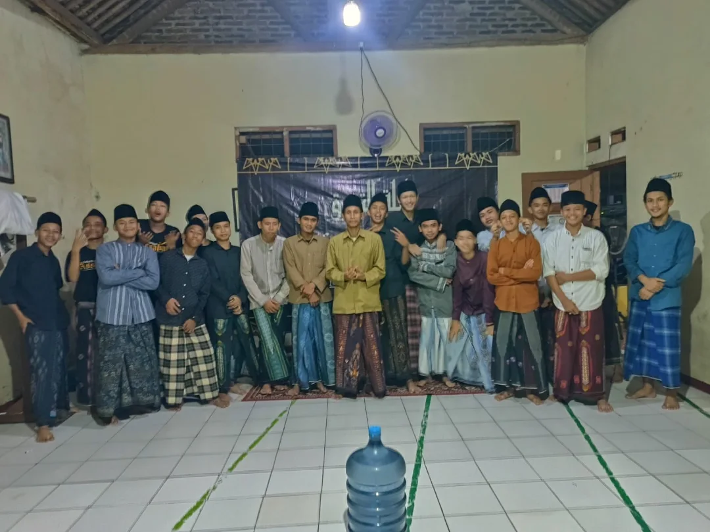
Suasana Tafaruk
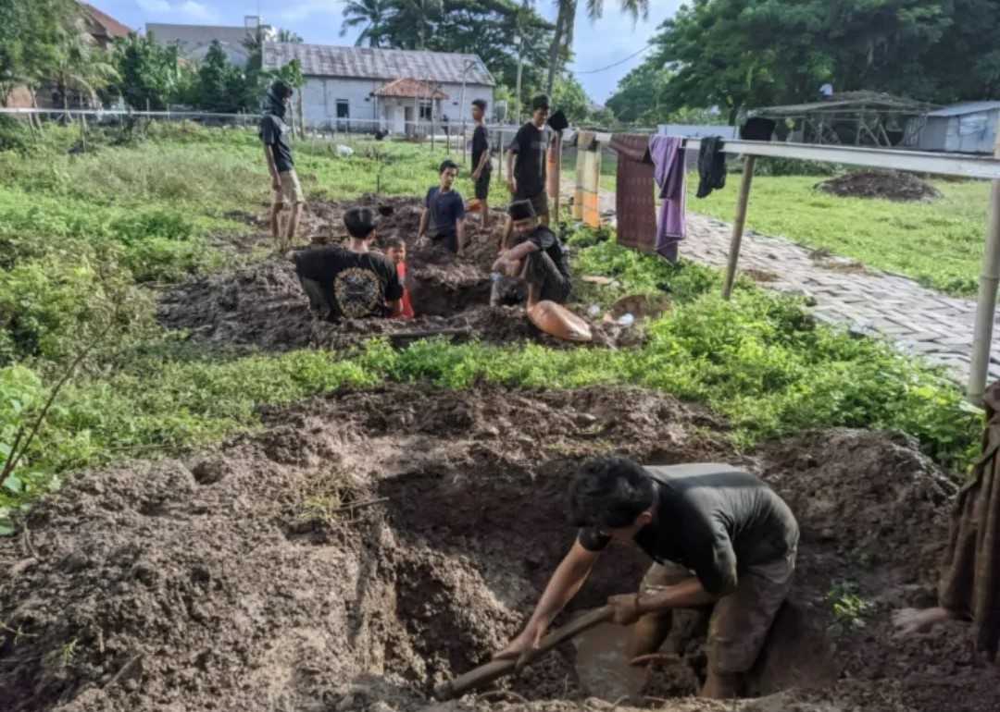
Kerja Bakti
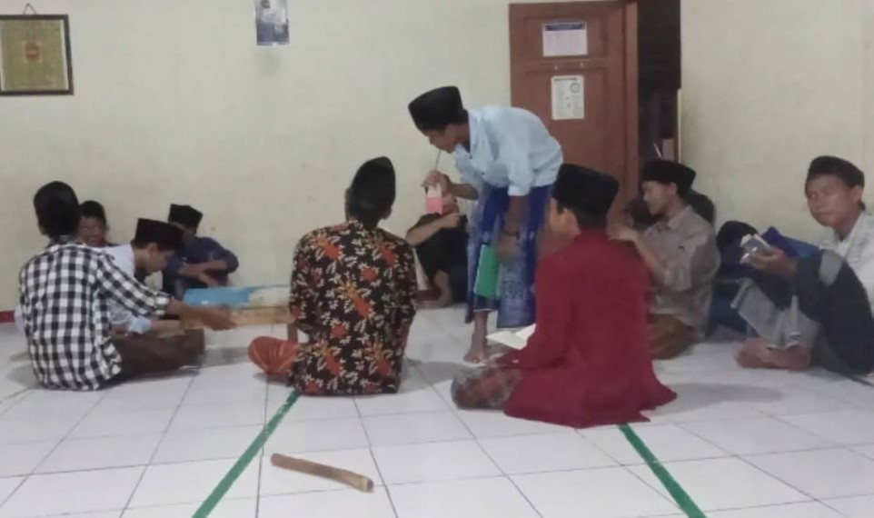
Diskusi dan Musyawarah Ilmiah
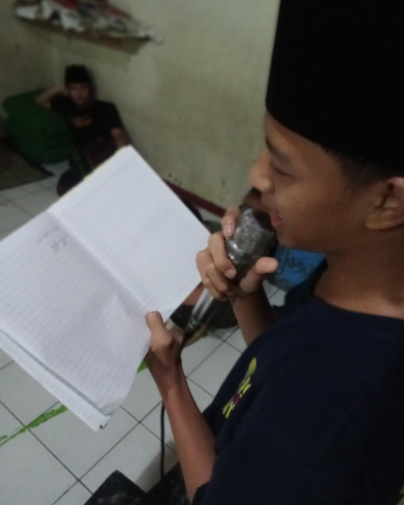
Latihan Khitobah Santri
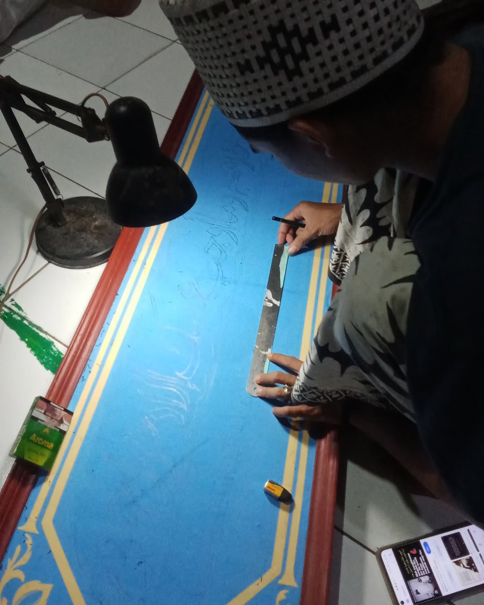
Pembelajaran Khot Kligrafi
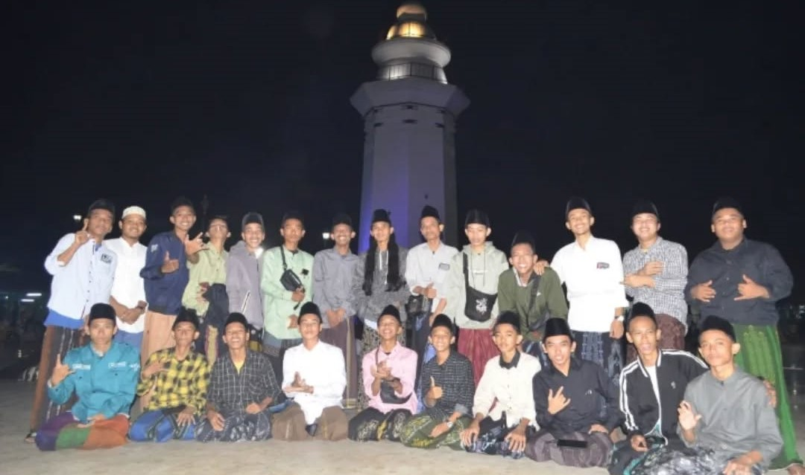
Kunjugan Wisata Religi
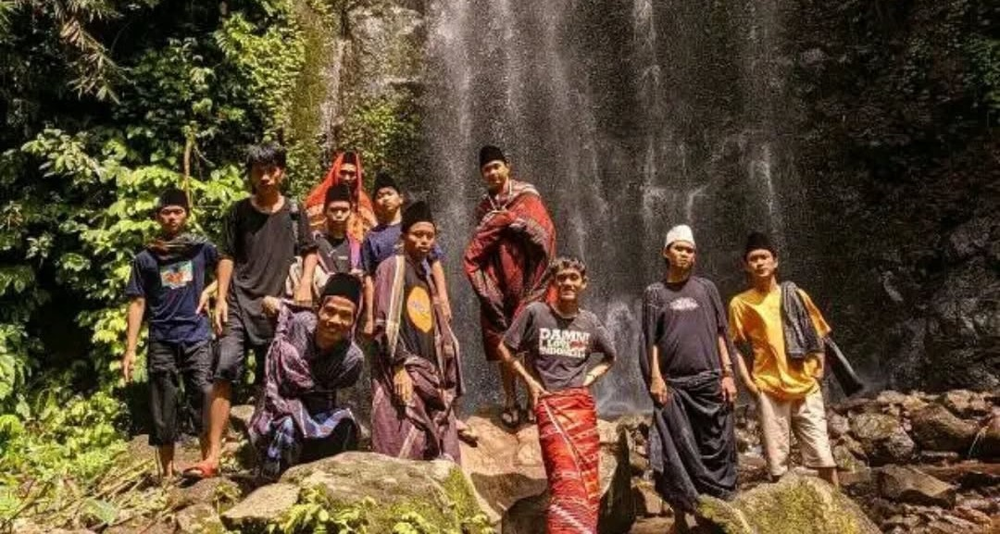
Adventurs 2022
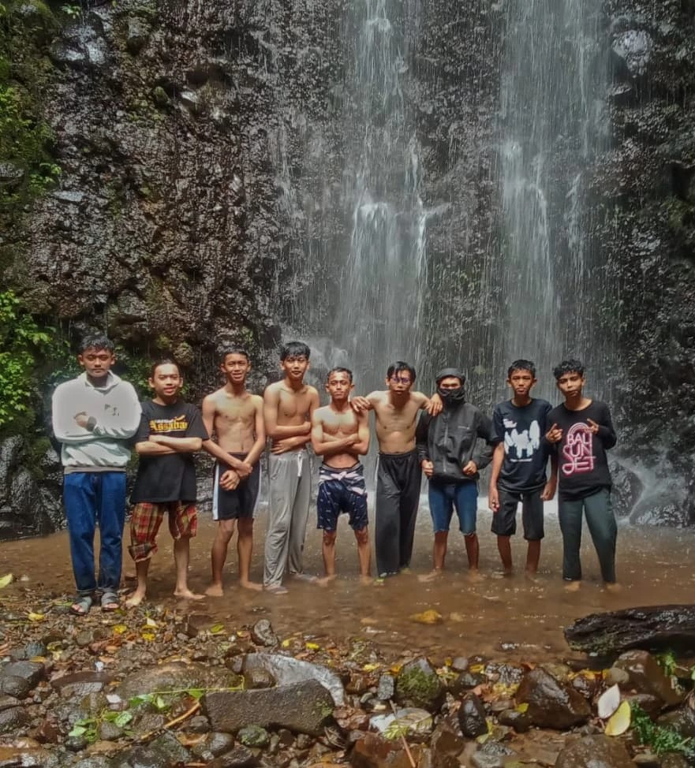
Adventurs 2025
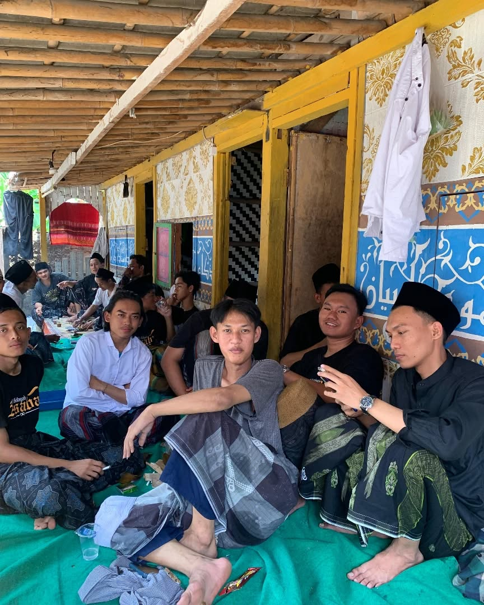
Reuni Alumni
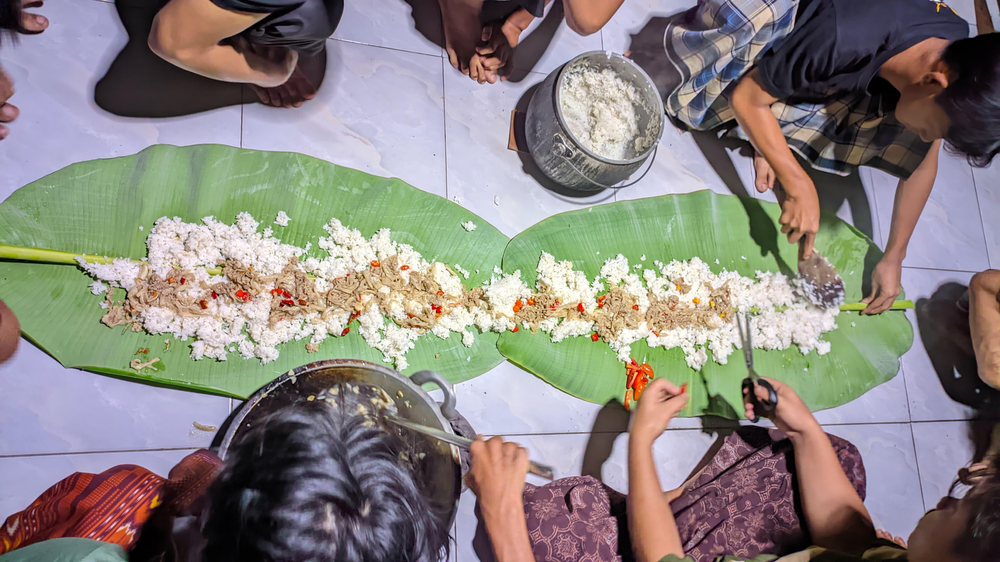
Makan Bersama
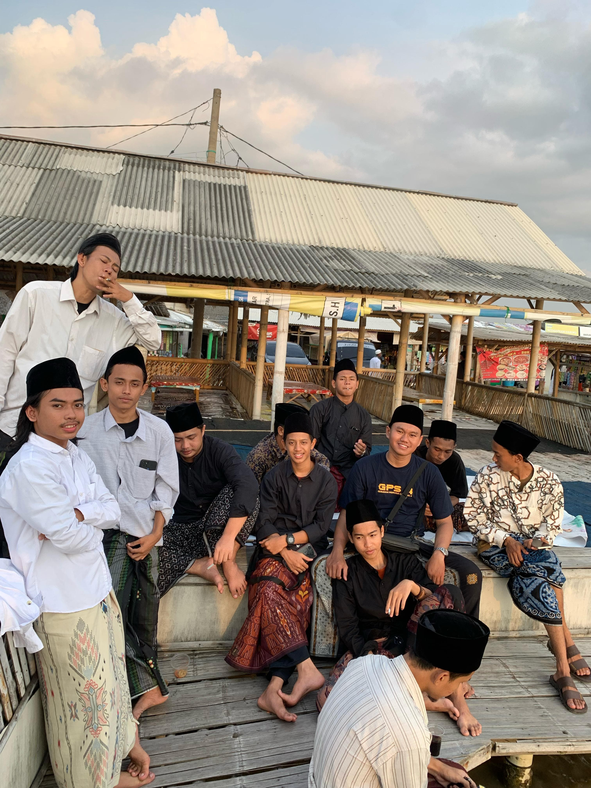
Kunjugan Wisata Religi